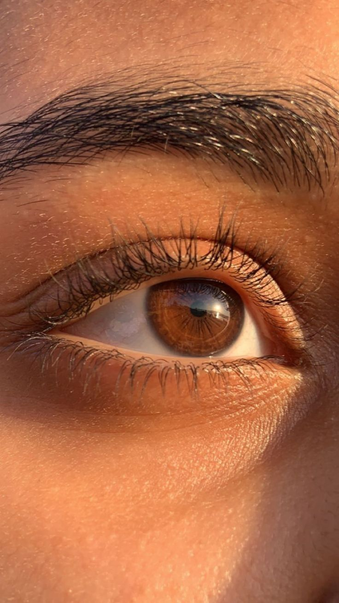
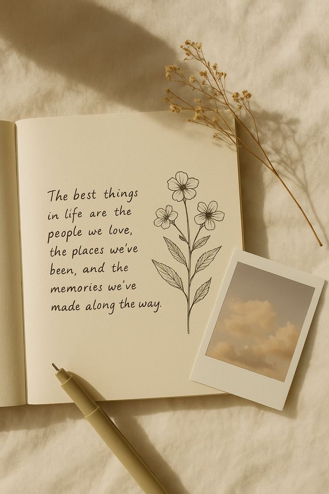

Esto no pide nada. Solo guarda.
Pasa cuando quieras. O no pases.
No se mueve estará siempre para ti.
Solo están esperando a que las vuelvas a ver.
Solo cosas que ya eres, aunque ahora no las recuerdes.
Un resumen diminuto de algo inmenso
(Porcentajes completamente subjetivos, nada que discutir)
servicios de incalculable valor que ofreces a diario
Lo que el mundo dice de ti cuando no estás escuchando
"Hay personas que entran en una habitación y la llenan de ruido. Ella entra y la llena de calma. No sé cómo lo hace, pero desde que la conozco, el mundo tiene menos aristas."
"No es que no tenga miedo. Es que tiembla y avanza igual. La he visto caer y levantarse con los ojos llenos de tierra y de futuro. Eso no se aprende. Eso se es."
"Sus ojos no miran. Se quedan. Son de ese color que no existe en las cajas de pinturas. Marrón tormenta, marrón refugio, marrón quédate."
"En un mundo de filtros y posturas, ella es real. Duele a veces, pero cura siempre. Prefiero su verdad incómoda a la mentira más bonita."
"No se mide el valor de alguien por lo que produce, sino por lo que deja en los demás cuando se va. Ella deja raíces. De las que sujetan."
"No pasa nada si hoy no puedes. Las flores también se cierran por la noche. No es debilidad. Es saber esperar a que amanezca."
"Su risa es un idioma que no necesita traducción. Una vez la oí desde la otra punta del pasillo y supe que todo iba a estar bien."
Porque a veces necesitas verte desde fuera para recordar quién eres


(pero absolutamente ciertos)
Personas que han sentido que existían al hablar contigo
Días en que todo pesaba y aun así amaneció de pie
Risas que escaparon sin pedir permiso (y eso que se tapa la boca)
Tés preparados como quien prepara un refugio en taza
Mundos visitados sin moverse del sofá
Abrazos que fueron medicina sin receta
Cosas bonitas que vio antes que nadie
Momentos en que fue real. Sin filtros, sin mentiras.
Días en que eligió moverse aunque la mente le decía quieta
Veces que sus piernas la empujaron hacia arriba. Literal y metafóricamente.
Gotas de sudor que en realidad eran tormentas saliendo del cuerpo
Canciones que le gritaron al oído: un día más, un día más, un día más
No tienes que usarlo. No caduca. No juzga.
A veces las palabras pesan menos cuando salen.
A veces necesitan un destino.
Si algún día necesitas que alguien simplemente lea,
sin consejos, sin prisas, sin "deberías"...
aquí hay un botón que no espera nada a cambio.
(O no. Este lugar también funciona en silencio.)